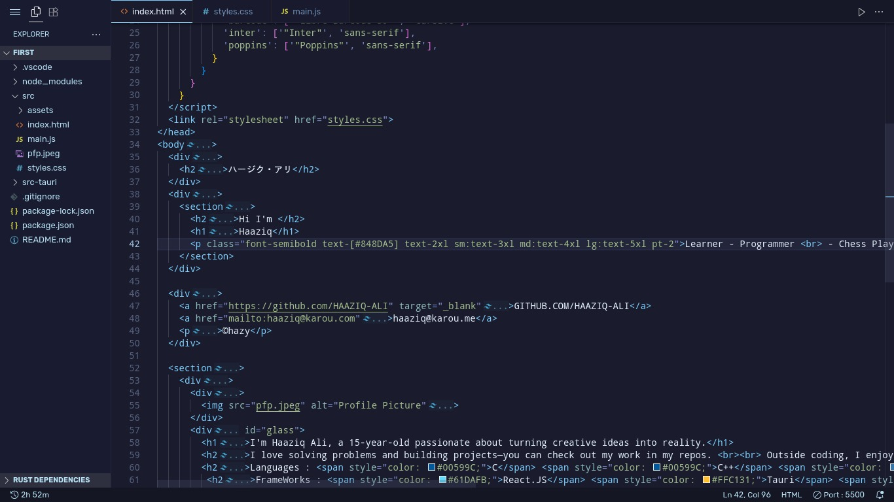
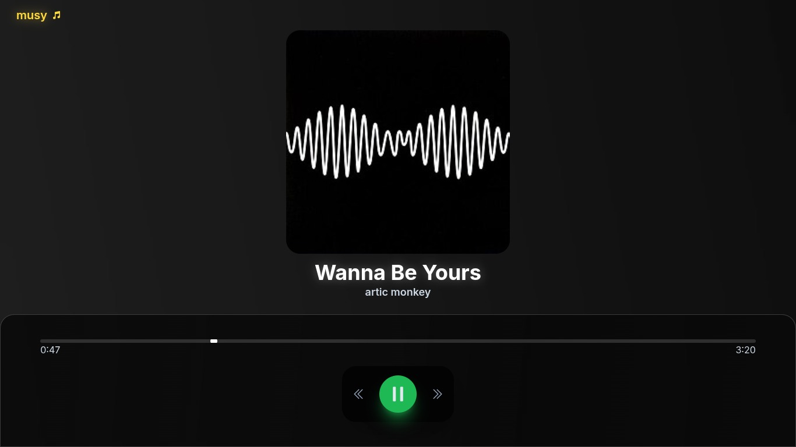
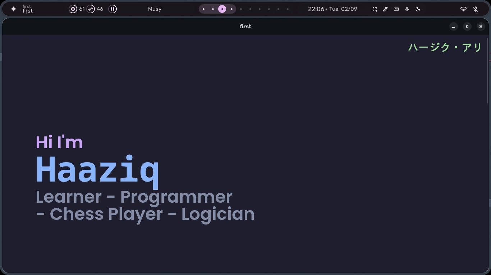

My works 🌟

KAROU THEME - VS Code theme
 View on GitHub
View on GitHub

MUSY - BEAUTIFUL WEB MUSIC PLAYER

KAROU.ME - TAURI & WEB APP
© 2025 Haaziq Ali · Handcrafted with <div>s and dreams · haaziq@karou.me